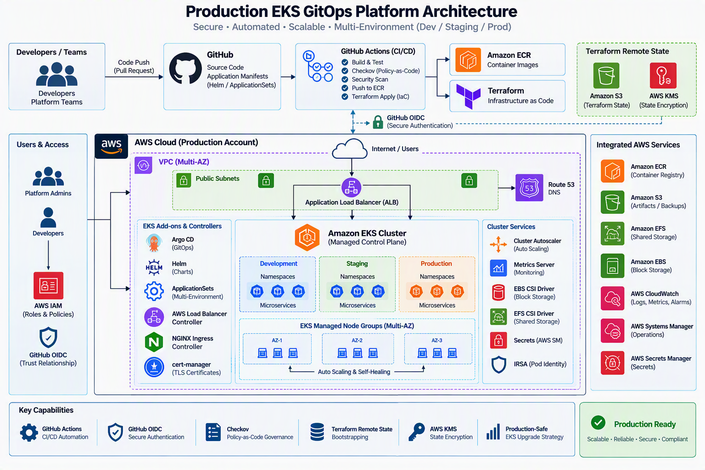

Production EKS / GitOps Platform
AWS EKS
Terraform
ArgoCD
Helm
GitOps

Designed and implemented a production-grade AWS EKS platform for containerized microservices leveraging GitOps principles with Argo CD, Helm, and ApplicationSets across Development, Staging, and Production environments.
- GitHub Actions CI/CD Automation
- GitHub OIDC Authentication
- Checkov Policy-as-Code Governance
- Terraform Remote State Bootstrapping
- AWS KMS State Encryption
- Production-Safe EKS Upgrade Strategy